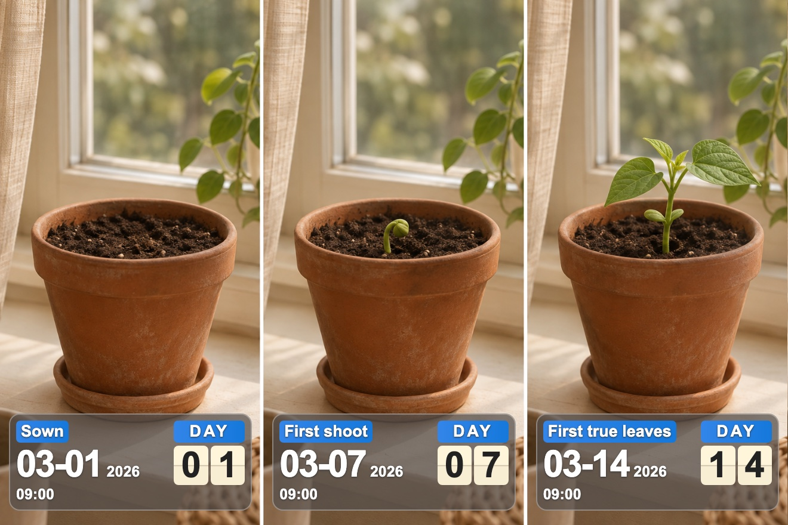

播种后第几天发芽？用照片做一份植物生长日记
把播种日设为 Day 1，再记录第一次出芽和长出真叶的照片。每次尽量从同一角度拍，隔几天回看时更容易看出变化。

从播种还是发芽开始算？
想知道种子播下去多久才出土，就从播种当天开始算。如果主要想观察小苗出土之后怎么长，可以把第一次看到幼芽的日期设为 Day 1。同一组照片沿用同一个起点。
拍下三个容易对照的阶段
- 刚播种。先拍一张花盆和土面。知道品种的话，在备注里写上植物名和品种。
- 第一次看到幼芽。拍下刚露出土面的部分，备注可以写「今天第一次看到出芽」。
- 第一片真叶展开。等最早的子叶之后长出并展开真叶，再拍一张。用你实际观察到变化的当天做记录。
让几次拍摄更容易比较
每次把同一个花盆放在画面里，尽量保持距离、角度和光线一致。想比较大小时，可以在花盆旁放一把尺子。记录多盆植物时，拍前核对这一盆的起始日期和备注。
在 iPhone 的天天水印相机里选择支持天数水印的模板，把播种日期设为 Day 1。拍摄时天数会加在照片上，回看或分享时可以直接看到。